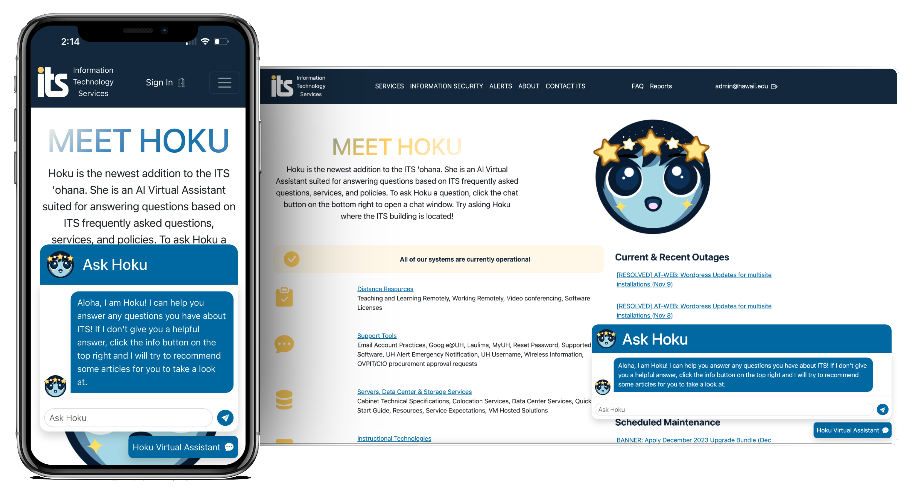
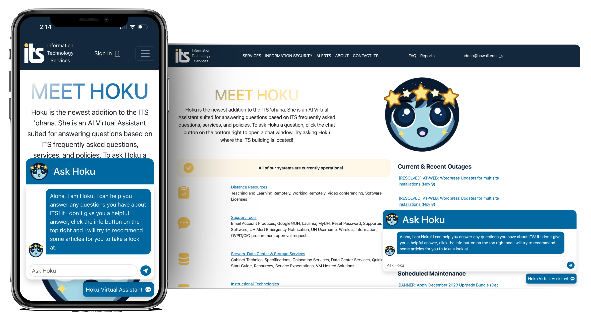

Ask Hoku - UH ITS AskUs Chatbot

 

Overview
Ask Hoku is a web application that my team and I created for the 2023 Hawaii Annual Code Challenge (HACC). I was a part of Team DarkMode which consisted of 3 members, Micah Tilton as the Team Captain, Malisa Lo, and me. Our team got the opportunity to create an A.I. chatbot assistant called Hoku that will answer questions relating to ITS. We even secured 2nd Place for the Coded Solutions category and was awarded $2,000, click here to read more about it!


In addition, we got invited to present our project at Project Day 2023, hosted by the University of Hawaii at Manoa’s Information and Computer Sciences Department (ICS). There we got awarded a Certificate of Recognition for getting 2nd place.
Proposed Challenge
The challenge that was proposed was to create an application that provides a conversational A.I. that supports a flexible and intuitive conversational search function to identify and retrieve relevant Ask Us articles and information. The current UH ITS AskUs webpage has an outdated search system which makes it difficult for users to find the answers that they are looking for. Simple searches like “How do I connect to the wifi?”, gives out a list of articles for the user to look through. This can be very time consuming for users to use just to find an answer to a simple question. Because of the non-user friendly design of the current ITS website, many users go to a Help Desk assistant instead of using the current Ask Us search bar.
Our Solution
Our team came up with the solution was to create Hoku with the use of modern AI tools that will improve on the current search functionality. This tool will allow users to find the answers they need using conversational language without the need for a Help Desk assistant.
How is Hoku Different?
What we did to make our solution unique and apart from the other contestants, we went as far as including 600 hawaii.edu websites, resulting in roughly 1,500 data records. We also wanted to focus on the user’s safety by preventing prompt injections which are a type of cyberattack on an A.I. system. They are designed to enable the user to perform unauthorized actions by attempting to manipulate the A.I. In order to achieve this, Hoku was prompted to not answer questions outside the hawaii.edu domain or the context provided along with a list of other preventions. Some of these preventions include to not have Hoku remember previous chat messages, users having a character limit, etc. To read more on this, check out our Security Considerations section on our GitHub Pages.
What I Learned from this Experience
Being someone who is completely new to web development and having to learn along the way was a challenge. But it didn’t stop me from putting in my all and in the end, I was able to walk away with a lot of new skills and met a lot of new people. This project gave me the opportunity to put my skills to the test by using React, Meteor, and MongoDB.
Improvements for the Future
Now that I know how web development works and how to use these tools, I feel more confident making a new project or competing in future hackathons. One that I do plan on doing next time is creating a set plan and schedule for better project management. It was something that we overlooked and struggled to manage our project at the start. But overall, I am proud of this project and what my team and I were able to accomplish in such a short amount of time. I look forward to working with them and seeing the rest of you in next year’s HACC!